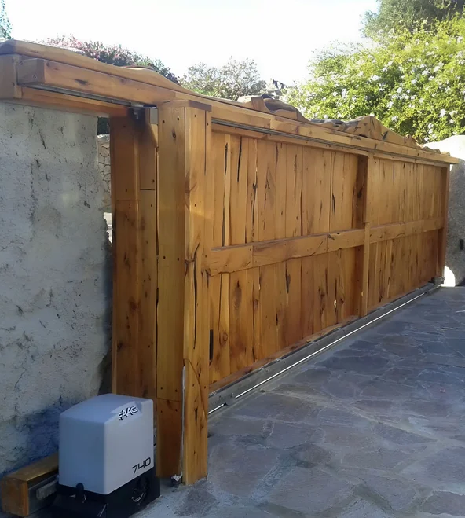
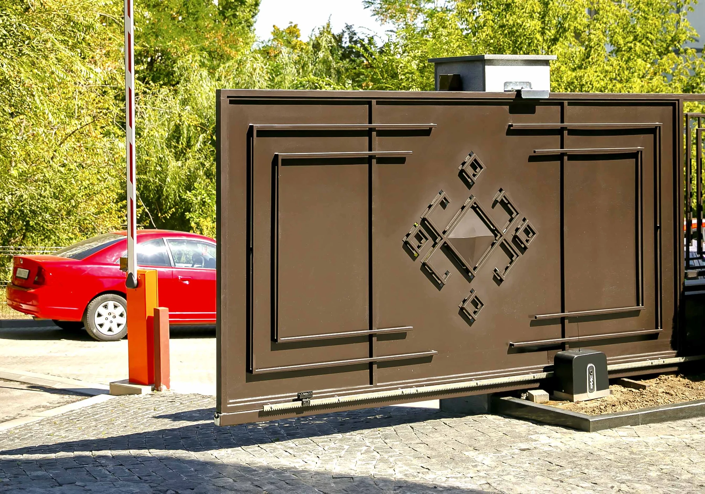

Automation for sliding gates with weight from 800kg up to 3500kg





FAAC sliding gate automation provides easy and safe access thanks to a smooth and reliable gate movement system.
These solutions are ideal to ensure maximum comfort and security thanks to cutting-edge technologies designed to meet even the most complex requirements.
Our automation systems are designed to be installed on any type of sliding gate and integrate perfectly in any context: from private residences to condominium complexes, as well as commercial and industrial facilities of any size.
To correctly choose a sliding gate automation, it is necessary to consider two fundamental elements: the gate weight and the type of use.
These are the two technologies that distinguish FAAC sliding gate automation today.
Both are designed to meet specific needs and provide maximum flexibility.

Hydraulic technology has always been the symbol of FAAC excellence and remains our strength. We were the first to introduce it, in 1965, for gate automation.
Using hydraulics in this sector requires a very high technological level and absolute precision in assembly.
This allows us to offer all the advantages of this technology, applicable in multiple contexts with consistently excellent performance.
Automation for sliding gates with weight from 900kg up to 3500kg

Thanks to the display and the prewired rotary card, managing your sliding gate with FAAC 741 gearmotors has never been easier.
The magnetic limit switch ensures excellent performance even in tough outdoor environments, guaranteeing durability.
The built-in encoder allows precise control of gate opening and deceleration.
If obstacles are detected, the system immediately reverses movement to protect people and vehicles.